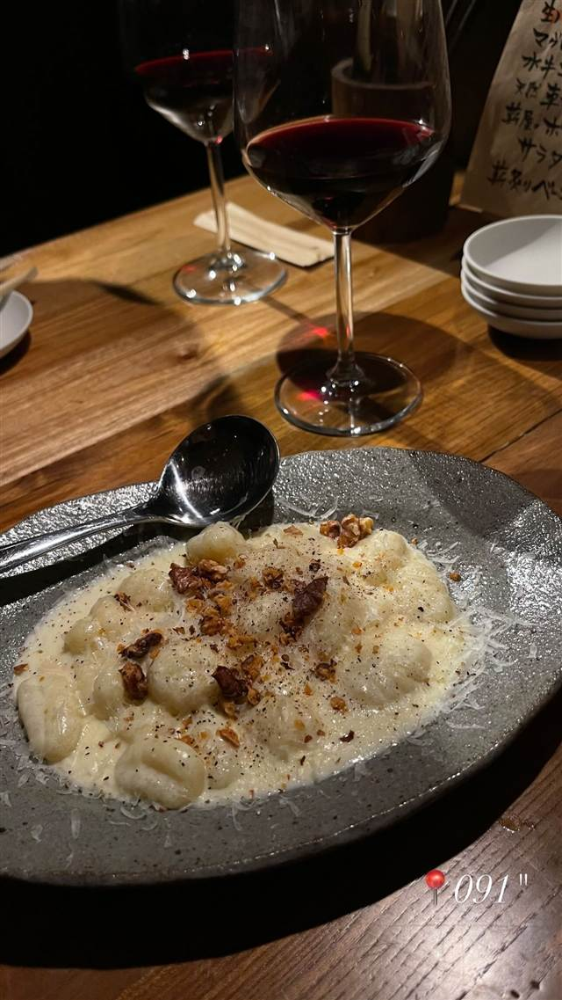

麺屋武蔵 武骨外伝
96年組の名店直系、魚介豚骨Wスープの黒つけ麺
麺屋武蔵 武骨外伝（Menya Musashi Bukotsu Gaiden）
1996年創業の名店「麺屋武蔵」の系列店。魚介と豚骨のWスープや蝦油など、ラーメン業界に数々の手法を広めた本店の技術を受け継ぎ、濃厚な黒つけ麺を看板にする「武骨外伝」として渋谷・道玄坂に店を構える。
TRIVIA
豆知識
- 「麺屋武蔵」は魚介豚骨Wスープや蝦油、変わり麺、発券機など今のラーメン店の定番を数多く生み出した先駆け的存在
- 「武骨外伝」は本店とは別に濃厚な黒つけ麺を看板にするサブブランド
REVIEWS
世間の評判
3.39食べログ
濃厚スープと麺量選べるコスパ
- 濃厚なスープと極太モチモチ麺の組み合わせを絶妙だと評価する声が多い
- 麺量を同一料金で3.5倍まで選べるコスパの良さを評価する声が多い
- 濃厚なスープは塩辛さが先行して途中で飽きやすいという指摘もある
- 店舗によりチャーシューの大きさにばらつきがあるという声もある
食べログ 口コミ1301件
| 創業 | 「麺屋武蔵」本体は1996年創業（1号店は青山、1998年に新宿へ移転し新宿総本店に） |
|---|---|
| 系譜 | アパレル業界出身の創業者・山田雄氏が42歳で開業した「麺屋武蔵」の系列店。1996年開業組は「中華そば 青葉」「くじら軒」とともにラーメン界で「96年組」と呼ばれる |
| 看板 | 濃厚な黒つけ麺（外伝黒つけ麺）。麺は1kgまで無料 |
| こだわり | 魚介と豚骨のWスープに蝦油（えびの香味油）を効かせる独自製法 |
| どこから | 都心 |
| 営業時間 | 月〜日 11:30-22:30 |
| 予算 | 昼 ¥1,000～¥1,999 夜 ¥1,000～¥1,999 |
| 定休日 | 無休 |
| 場所 | 渋谷 東京都渋谷区道玄坂2-8-5 |
| メモ | 渋谷駅から徒歩圏、道玄坂に位置 |
食べたもの：ニョッキとワイン / つけ麺
NEARBY
近い店・同じ系統の店
-
 パスタ 渋谷
KURA 渋谷店
元プロゴルファーら異業種出身者が始めた、もちもち生パスタ50種以上
昼 ¥1,000～¥1,999 夜 ¥2,000～¥2,999
パスタ 渋谷
KURA 渋谷店
元プロゴルファーら異業種出身者が始めた、もちもち生パスタ50種以上
昼 ¥1,000～¥1,999 夜 ¥2,000～¥2,999
-
 ベトナム 渋谷駅
ミス・サイゴン（MISS SAIGON）
ベトナム人スタッフが作る野菜たっぷりのフォーとバインセオ
夜 ～¥5,999
ベトナム 渋谷駅
ミス・サイゴン（MISS SAIGON）
ベトナム人スタッフが作る野菜たっぷりのフォーとバインセオ
夜 ～¥5,999
-
 台湾 恵比寿
七一飯店
週1回だけの営業だった名残の店名、看板は魯肉飯
昼 ¥1,000～¥1,999 夜 ¥1,000～¥1,999
台湾 恵比寿
七一飯店
週1回だけの営業だった名残の店名、看板は魯肉飯
昼 ¥1,000～¥1,999 夜 ¥1,000～¥1,999
-
 コーヒー 渋谷
Café Kitsuné Shibuya
パリ発ブランドのカフェ、狐にちなむ名を持つバゲットサンド
昼 ¥1,000～¥1,999 夜 ¥1,000～¥1,999
コーヒー 渋谷
Café Kitsuné Shibuya
パリ発ブランドのカフェ、狐にちなむ名を持つバゲットサンド
昼 ¥1,000～¥1,999 夜 ¥1,000～¥1,999
-
 コーヒー 渋谷駅
Roasted COFFEE LABORATORY 渋谷神南店
店内焙煎の豆で淹れる「MADE IN SHIBUYA」のコーヒー
昼 ¥1,000～¥1,999 夜 ¥1,000～¥1,999
コーヒー 渋谷駅
Roasted COFFEE LABORATORY 渋谷神南店
店内焙煎の豆で淹れる「MADE IN SHIBUYA」のコーヒー
昼 ¥1,000～¥1,999 夜 ¥1,000～¥1,999
-
 カフェ 渋谷
JINNAN CAFE 渋谷店
ドラマや映画のロケ地に頻繁に使われるとろけるスフレパンケーキ
昼 ¥1,000～¥1,999 夜 ¥1,000～¥1,999
カフェ 渋谷
JINNAN CAFE 渋谷店
ドラマや映画のロケ地に頻繁に使われるとろけるスフレパンケーキ
昼 ¥1,000～¥1,999 夜 ¥1,000～¥1,999